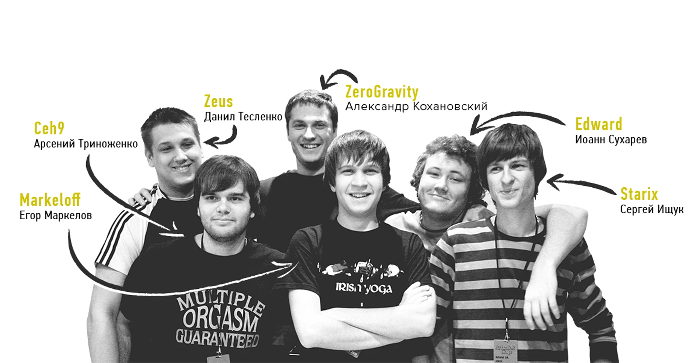
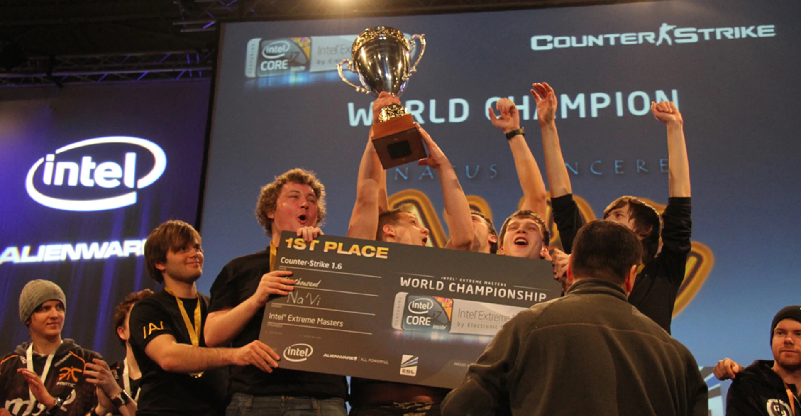
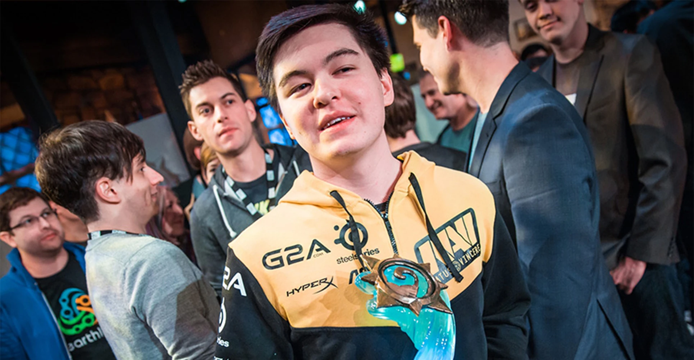
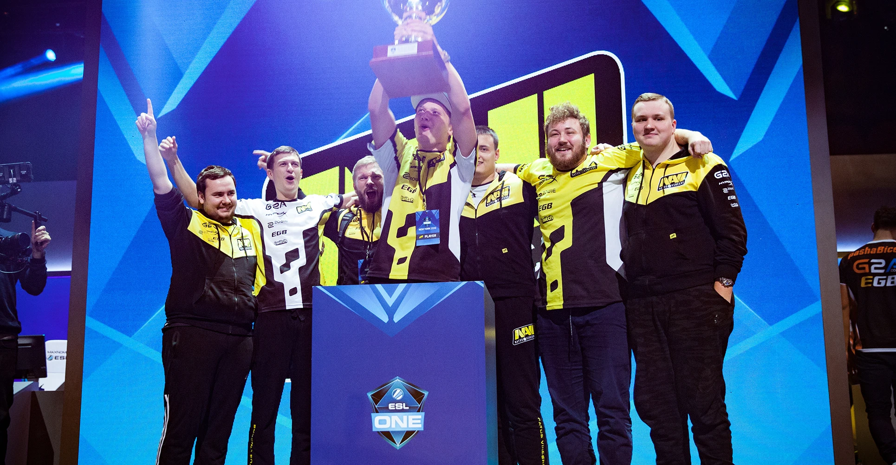
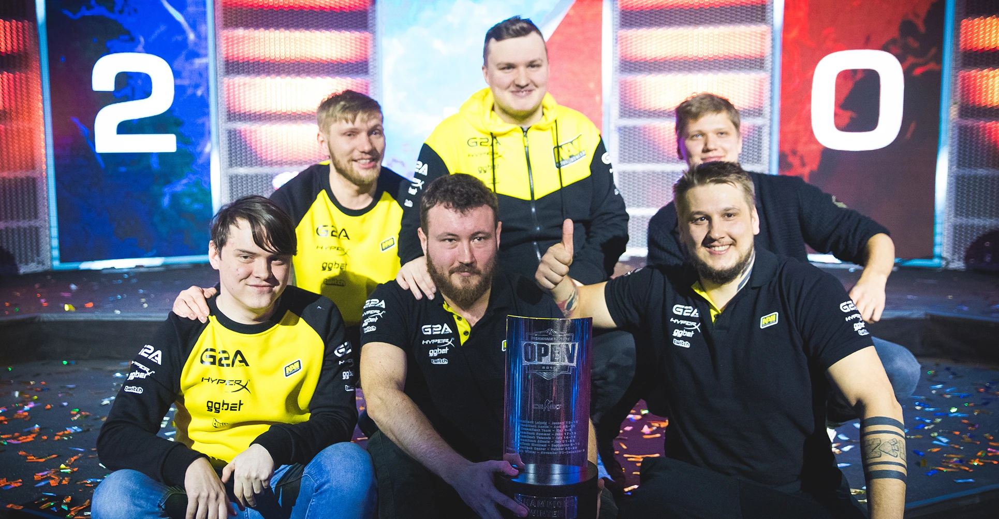
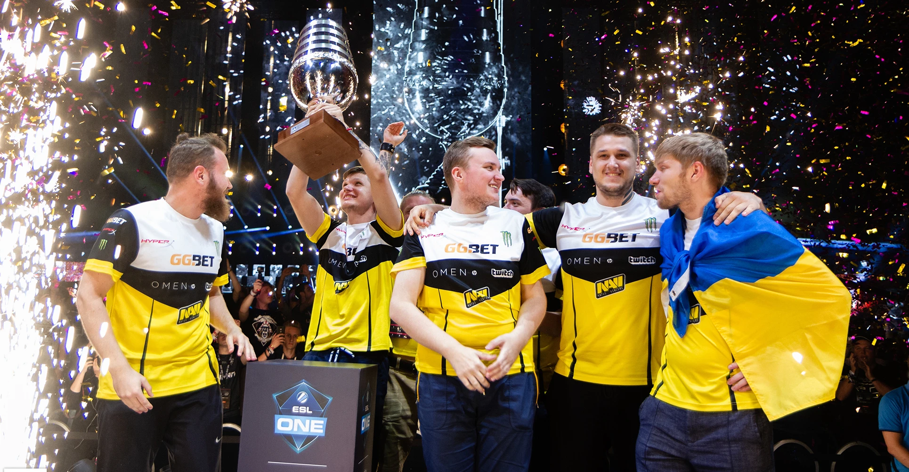
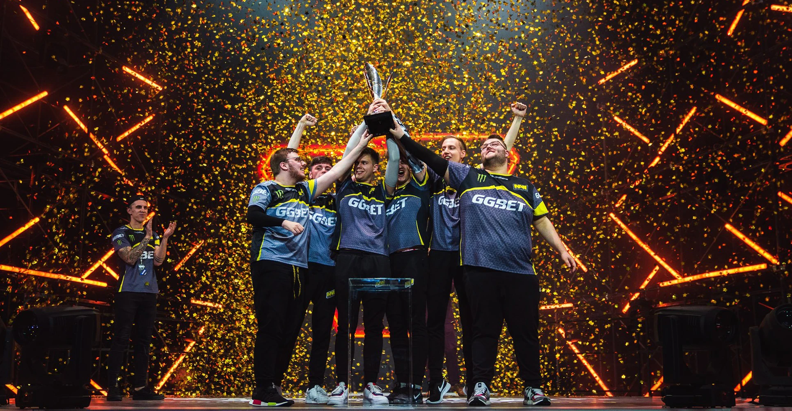
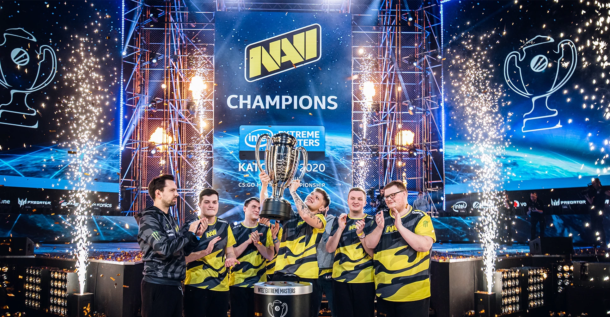
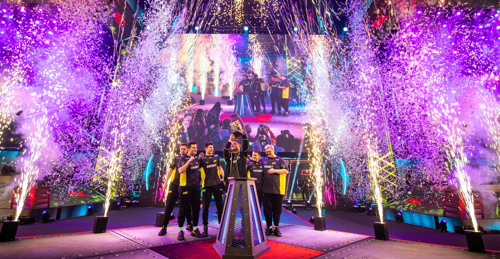
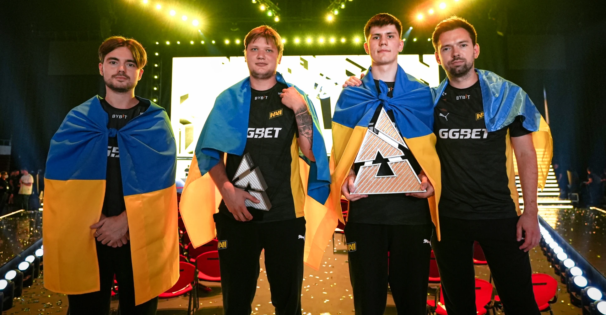

Історія кіберспортивної організації Natus Vincere
2009
У жовтні 2009 року, коли комп'ютерний спорт стрімко набував популярності й неухильно зростала кількість чемпіонатів із великими призовими, меценат із Казахстану Мурат «Arbalet» Жумашевич на турнірі Intel Extreme Masters в Дубаї озвучив ідею створення кіберспортивної організації. Arbalet поставив собі за мету заснувати професійну команду, для якої він стане головним спонсором: надасть гравцям майданчик для тренувань і візьме на себе фінансові питання, починаючи із зарплат і закінчуючи оплатою перельотів. Першим на пропозицію відгукнувся starix — саме перед цим відомим гравцем з Counter-Strike було поставлено завдання сформувати зіркову п'ятірку. 17 грудня 2009 року навколо команди з Counter-Strike почалося будівництво кіберспортивної організації Natus Vincere (з лат. — «народжені перемагати»). Спочатку назва NAVI була запозичена з фільму «Аватар», а свого остаточного вигляду набула після конкурсу на кращу розшифровку абревіатури, проведеного серед фанатів. До першого складу NAVI увійшли Edward, markeloff, starix, ceh9 і Zeus, а менеджером став ZeroGravity. Всі гравці виділялися високою індивідуальною майстерністю і мали великий досвід турнірних виступів.

2010
За 2010 рік NAVI завоювали 12 медалей, 8 з яких — золоті, і в них з'явилась ціла армія фанатів. Успіхи гравців відзначили на порталі hltv.org: у щорічному рейтингу опинилися Edward (п'яте місце), starix (четверте місце), а markeloff був визнаний найсильнішим гравцем сезону. Zeus, в свою чергу, отримав звання кращого капітана. У жовтні 2010 року організація NAVI стала мультигеймінговою, створивши команду з Dota. Цікаво, що спочатку в п'ятірці виступали Goblak і Mag, але тривало це відносно недовго. Повністю сформовано команду NAVI. Dotа було на початку 2011 року з гравців Dendi, XBOCT, LighTofHeaveN, ArtStyle і Puppey.

2011
У 2011 році клуб заснував команди з FIFA, StarCraft II та League of Legends. Нові підрозділи не виправдали надій і згодом були розформовані. Винятком став Yozhyk, один з найсильніших гравців світу в FIFA, який ще довго тішив уболівальників перемогами в складі NAVI. У його скарбничці понад 20 медалей зі змагань різного рангу. Головною кіберспортивною подією 2011 року став The International — турнір в Dota 2 з рекордним на той час призовим фондом в розмірі $ 1 000 000. Варто відзначити, що на виставці gamescom в Кельні ця гра Valve вперше була представлена широкій аудиторії. В кінці епохи Dota Allstars команда NAVI була однією з кращих, тому закономірно отримала запрошення на The International. У Кельні Народжені Перемагати зробили справжню сенсацію: без проблем подолали груповий етап та продовжили переможну ходу в сітці плей-офф, де в гранд-фіналі впевнено обіграли фаворита на цьому турнірі — EHOME. Успіх організації не залишився непоміченим: XBOCT, Dendi, Puppey, ArtStyle і LighTofHeaveN стали кумирами мільйонів і навічно вписали свої імена в історію кіберспорту.

2012
Цей рік виявився дуже важливим в першу чергу для CS-складу. Команда, як і раніше, демонструвала висококласну гру, кілька разів перемогла на великих турнірах, а також ставала срібним призером. Однак перехід в нову дисципліну був неминучий: в повному складі команда NAVI до кінця 2012 року почала виступати в Counter-Strike:Global Offensive. Dota-склад продовжував тішити вболівальників. У 2012 році Natus Vincere вдалося вийти у фінал шести великих турнірів і двічі стати чемпіонами! Також Народжені Перемагати вийшли вдруге поспіль у фінал The International, але на цей раз не зуміли обіграти інший китайський колектив — Invictus Gaming. Втім, на подальших результатах це не позначилося: гравці NAVI залишалися серед кращих на професійній сцені. Важливим кроком стала поява NAVI ще в одній MOBA — League of Legends. Клуб підписав договір з перспективною європейською командою. Вона боролася в цілому ряді чемпіонатів, але до кінця року припинила своє існування.

2013
Згодом Народжені Перемагати неодноразово поверталися на The International. Найбільш драматичним став двобій NAVI зі шведською п'ятіркою Alliance у 2013 році — цей матч називають одним з найбільш яскравих за весь час змагань у Dota 2. Утримували планку й гравці в Counter-Strike. У червні 2013 року було сформовано склад NAVI у World of Tanks з гравців The RED Rush. Перший кубок танкісти завоювали вже у вересні, отримавши перемогу на чемпіонаті в Сіетлі. За чотири наступні роки танкова дружина Natus Vincere виграла більше ніж 20 міжнародних нагород і $ 350 000 на турнірах у Китаї, Польщі, США та в інших країнах. На жаль, у червні 2017-го шляхи Natus Vincere і World of Tanks розійшлися через стрімке згасання кіберспортивної складової дисципліни.

2014
У 2014 році було оголошено про створення другого, американського, Dota-підрозділу Natus Vincere. Обидві команди взяли участь у The International 2014, але посісти місце серед найкращих не змогли. Через кілька місяців після чемпіонату склад NAVI.US був розформований, а в головному ростері відбулися зміни.

2015
2015 рік для організації Natus Vincere склався досить вдало: були засновані команди з Heroes of the Storm, Hearthstone і League of Legends. В іграх компанії Blizzard Народжені Перемагати здобули відмінні результати: HotS-підрозділ пройшов у півфінал BlizzCon, а шведський легіонер команди з Hearthstone Ostkaka став чемпіоном світу, вигравши $ 100 000. Незважаючи на успішні виступи, роком пізніше обидві команди були розформовані. У League of Legends справи йшли набагато гірше: європейський підрозділ проіснував недовго, а виступи СНД-складу від сезону до сезону погіршувалися. Коли завершився річний спліт 2017 року, організація вирішила зосередити увагу на інших популярних дисциплінах. Всього за 2015 рік було завойовано більш нiж 40 нагород, а загальна сума призових перевищила $ 1 000 000!

2016
2016 рік для команди з CS:GO почався з перемог на DreamHack ZOWIE Leipzig 2016 і Counter Pit Season 2, проте потім був доволі тривалий спад. Щоб повернутися на п'єдестал пошани, було прийнято рішення замінити легендарного Zeus молодим і талановитим Олександром «s1mple» Костилєвим. Олександр досить швидко адаптувався до нового колективу, і вже до кінця року NAVI стали чемпіонами ESL One: New York. У США s1mple завоював першу нагороду MVP у своїй кар'єрі! Dota-склад зазнав значних змін, після невдалого виступу на The International 2016 було прийнято рішення сформувати новий колектив навколо Dendi і GeneRaL. До кінця грудня фанатам був представлений новий ростер: до «ветеранів» приєдналися європейські легіонери Pajkatt, rmN- і Biver. Загалом у 2016 році NAVI стали призерами на більш як 35 чемпіонатах і заробили близько $ 1 400 000.

2017
2017-й склався для організації не кращим чином: команди з Counter-Strike:Global Offensive і Dota 2 не змогли повернути колишню форму, внаслідок чого сталися чергові зміни в їхньому складі. В кінці липня до команди з Dota 2 приєдналися Crystallize і RodjER, замінивши європейських легіонерів, а обов'язки капітана став виконувати SoNNeikO. Оновлений склад заграв новими фарбами: хлопці дійшли до півфіналу DreamLeague Season 8, завоювали бронзу MDL Macau, а також тріумфально обіграли у фіналі Adrenaline Cyber League команду Virtus.pro. Після серії невдач, які переслідували гравців з CS:GO, GuardiaN вирішив покинути організацію та приєднатися до FaZe Clan. У колективі на той момент не було лідера, тому повернення Данила «Zeus» Тесленка фанати сприйняли з радістю. Проте команда продовжувала зазнавати труднощів, і до кінця року сталася ще одна заміна: seized взяв паузу, а місце в головному складі зайняв electronic. Ці зміни позитивно вплинули на результати п'ятірки: були здобуті важливі перемоги у відбіркових матчах великих турнірів. У 2017 році також були створені команди з Quake Champions і Paladins. Клуб Natus Vincere на полях нового шутера від id Software представляв Антон «COOLLERZ» Сіньгов — багаторазовий призер міжнародних змагань із Quake III Arena. Перше золото для NAVI Антон завоював вже через кілька днів після початку співпраці, а на чемпіонаті світу він посів місце в трійці кращих. На жаль, згодом належного розвитку Quake Champions не відбулося: кількість чемпіонатів стрімко зменшувалася, тому в травні 2018 року організація Natus Vincere оголосила про розпуск підрозділу. Захищати кольори NAVI в Paladins стали п'ять європейців, які раніше виступали за WASD Sports. Склад NAVI.Paladins є одним з найсильніших в дисципліні: гравці тричі ставали чемпіонами світу, заробивши в сукупності $ 175 000.

2018
Команду з Dota 2 в першій половині 2018 року переслідували невдачі: після низки поразок зі складу вийшов RodjER (трансфер у Virtus.pro) і SoNNeikO. Оговтатися від втрати талановитих сапортiв NAVI не вдалося. Результати з Lil і LeBron — новачками команди — були не найкращими, і після поразки у відкритих відбіркових матчах The International 2018 було прийнято рішення перевести всіх діючих гравців в інактив. У 2018 році в Natus Vincere з'явився підрозділ із Playerunknown's Battlegrounds — популярної гри в жанрі Battle Royale. Вже у дебютному турнірі команді підкорився LAN-фінал першого сезону Global Loot League з призовим фондом у $ 50 000. У Мінську, де проходив фінальний для СНД кваліфікаційний етап чемпіонату світу, NAVI знову здобули перемогу, підтвердивши статус кращої команди регіону. На PUBG Global Invitational 2018 у режимі від першої особи NAVI посіли четверте місце, заробивши $ 60 000. Команда з CS:GO також продовжила тішити фанатів перемогами і значно зміцнила свої позиції на світовій арені. NAVI завоювали бронзові медалі на чемпіонатах ELEAGUE Major: Boston 2018, ESL Pro League Season 7 і ELEAGUE CS:GO Premier, срібні — на DreamHack Masters Marseille 2018 і SL i-League Season 4, а також поповнили колекцію трофеїв трьома кубками: SL i- League Season 5, CS:GO Asia Championship і ESL One: Cologne 2018. Після вражаючої серії успішних виступів команда закріпилася на другій сходинці світового рейтингу CS:GO, а Олександр «s1mple» Костилєв був відзначений п'ятьма нагородами MVP — він став першим гравцем в історії CS:GO, якому вдалося отримати це звання без перемоги на турнірі. На чемпіонаті світу FACEIT Major: London 2018 Народжені Перемагати знову довели, що є однією з кращих команд світу: NAVI зупинилися за крок від чемпіонства, поступившись у фіналі Astralis. 1 вересня 2018 року клуб представив оновлену команду в дисципліні Dota 2: вперше за 8 років історії NAVI до складу п'ятірки не ввійшов Dendi. Ставка була на молодих гравців: до Crystallize приєдналися Blizzy, MagicaL і Chuvash, а капітаном команди став SoNNeikO. Відбулися зміни й на тренерському містку: новим наставником гравців став Mag. Найбільш важливою подією для кіберспортивного клубу NAVI в 4-му кварталі 2018 року став перехід до нового власника.Олександр Кохановський ухвалив рішення продати NAVI, розуміючи що виведення клубу на новий рівень потребує серйозних інвестицій. Тоді ж, у 4-му кварталі 2018 року мажоритарним власником NAVI став Максим Кріппа. Максим — український бізнесмен та венчурний інвестор з активами в IT, Game Development та Real Estate.

2019
2019 рік був насиченим і продуктивним. Кіберспортивний клуб NAVI виступав у багатьох дисциплінах, починаючи з CS:GO і Dota 2, закінчуючи іграми в жанрі Battle Royale. Команда з CS:GO пережила ряд злетів та падінь. Народжені Перемагати входили в топ на різних чемпіонатах, але водночас не могли похвалитися стабільною грою. З цієї причини колектив покинули легендарний Zeus та Edward, поступившись місцем Boombl4 i GuardiaN. Змінивши посаду спортивного директора, тренером став B1ad3, разом з яким команді потрібно було підкорювати нові вершини. У 2019 році, завдяки отриманим інвестиціям від нового власника, кіберспортивний клуб NAVI запустив унікальний проєкт, спрямований на розвиток молодих кіберспортсменів: NAVI Esports Camp. За його підсумками мала сформуватися NAVI Junior — команда-академію, зібрана з найсильніших юніорів. 2019 рік для NAVI.Dota 2 теж був неоднозначним. Команда потрапила на The International, зайняла там 13–16-те місця, зазнала ряд кадрових змін і довгий час не могла прийти до своєї кращої форми, проте закінчила рік на мажорній ноті, ставши учасником DreamLeague Season 13. У 2019-му під жовто-чорним прапором NAVI почала виступати команда з Rainbow Six Siege. Дебют не був успішним, і влітку під тегом NAVI вже боровся склад MnM Gaming. Рішення виявилося вдалим: команда перемогла в кількох регіональних чемпіонатах, а також в десятому сезоні Pro League, вигравши $ 100 000. Виправдали очікування також підрозділи клубу в PUBG і Apex Legends: обидві команди демонстрували високі результати на чемпіонатах і тішили глядачів відмінною грою. Крім того, у NAVI знову з'явився представник у Quake Champions, куди з посади тренера Apex Legends перейшов cYpheR. У 2019 році NAVI закрили підрозділи з FIFA і Paladins, однак загалом рік можна назвати плідним.

2020
Цей період був складним не тільки для NAVI, але й для всієї кіберспортивної спільноти: відбулося лише кілька запланованих LAN-турнірів, а потім змагання перемістилися в онлайн внаслідок COVID-19. 2020-й почався зі змін CS:GO-складу Natus Vincere: до команди приєднався молодий гравець Perfecto, який замінив GuardiaN. Оновлений ростер завоював право боротися в фіналі BLAST Premier Spring і посів друге місце на ICE Challenge 2020, а потім вирушив на IEM Katowice 2020. Там йому не було рівних: через десять років після неймовірної перемоги на IEM Season IV Народжені Перемагати знову підняли над головою кубок і забрали винагороду в розмірі $ 250 000. Клуб також продовжив формування NAVI Academy. На піку своєї форми молоді гравці займали 37-й рядок рейтингу HLTV.org. В кінці року випускник академії B1t зіграв за основну команду з CS:GO, а згодом став її постійним учасником. Через незадовільні результати в Dota 2 часто замінювали гравців команди. Поворотний момент стався у вересні: Народжені Перемагати запросили під своє крило вже зіграний колектив FlyToMoon. Фанати тепло прийняли нових гравців, а ветерани клубу були раді знову побачити GeneRaL і RodjER. Справи поступово пішли вгору, і вже в грудні команда стала переможцем OGA Dota PIT Season 4. У 2020 році клуб знову відкрив Fortnite-підрозділ, запросивши молодих гравців Putrick і 7tor, а також зробив крок до мобільного кіберспорту — восени наші ряди поповнила команда з PUBG Mobile. Рік для цих дисциплін закінчився на мажорній ноті: за підсумками декількох місяців фортнайтери на двох заробили понад $ 25 000, а команда з PUBG Mobile стала переможцем EMEA League.

2021
Попри всі складнощі, які принесла пандемія COVID-19, у 2021 рік кіберспортивний клуб NAVI вступив з великими планами й чітко поставленими цілями. Народжені Перемагати були націлені як на закріплення успіхів, так і на досягнення нових висот — тег NAVI почав з'являтися не тільки на екранах моніторів, але й на мобільних пристроях. Wild Rift, Brawl Stars і Free Fire — ці ігри встали в один ряд з іншими кіберспортивними дисциплінами у сфері інтересів NAVI. Крім того, у клубі з'явився VALORANT-підрозділ, інші ж продовжили гідно виступати як в СНД, так і на міжнародній арені. Найбільших висот у 2021 році досягла команда NAVI з Counter-Strike: Global Offensive. Перемога на BLAST Premier:Global Final 2020, StarLadder CIS RMR 2021 і Intel Extreme Masters XVI — Cologne, а також перше місце у міжнародному рейтингу команд — результат, яким варто пишатися! Також у 2021 році в Києві було збудовано високотехнологічний офіс з ігровими пентхаусами, а штат клубу зріс у 4 рази.

2022
2022 року NAVI мали й далі стрімко зростати, проте повномасштабна війна, розв’язана росією 24 лютого, внесла корективи до планів клубу. Український народ не здригнувся перед цією агресією і згуртувався як ніколи раніше. Кіберспортивний клуб NAVI підтримував та продовжує активно підтримувати Україну. Народжені Перемагати провели багато благодійних шоу-матчів. Серед них варто виділити збір для проєкту «Землячки» та турнір BORN TO BE BRAVE, проведений спільно із фондом United24, який було створено з ініціативи Володимира Зеленського. Об’єднавшись із професійними футболістами, інфлюєнсерами та найкращими клубами світу з CS:GO, Народжені Перемагати зібрали понад $ 520 000. Також NAVI зняли документальний фільм «Покидаючи дім»: у ньому були розкриті історії фанатів, змушених залишити рідну землю. Крім того, клуб спільно з Акордбанком передав на фронт 220 повністю укомплектованих авто. Війна внесла свої корективи й до списку дисциплін, де було представлено NAVI. Клуб розпустив російські склади PUBG Mobile та Mobile Legends. Також було вирішено відмовитися від команди з League of Legends: Wild Rift у зв’язку з нерентабельністю дисципліни. Але були і приємні поповнення в складі клубу. У квітні була представлена жіноча команда NAVI Javelins із СS:GO, яка до кінця року стала однією з найкращих у світі та пройшла добір на перший LAN-турнір у 2023 році. Також було створено жіночу команду NAVI Celestials із VALORANT, на цей момент вона посідає третє місце у регіоні EMEA. Говорячи про VALORANT, треба зазначити ще одну важливу подію: NAVI стали одним із 30 клубів — партнерів нової франшизної Ліги в новій дисципліні від Riot, виступати в якій запросили чемпіонський склад FunPlus Phoenix на чолі з легендарним українським капітаном ANGE1. Раніше ця команда вже ставала чемпіоном LAN-турніру VCT 2022: Stage 2 Masters у Копенгагені, а після вступу до NAVI відразу ж виграла європейський чемпіонат G-Loot VALORANT Cash та закріпила за собою звання однієї з найкращих у регіоні. Не менше подій відбулося у CS:GO. Наприкінці травня команда зробила заміну, відправивши Boombl4 на лаву запасних. У важкий момент на допомогу прийшов sdy, разом із яким клуб NAVI здобув перемогу на турнірі BLAST Premier: Spring Finals 2022 і посів 5-те — 8-ме місце на IEM Rio Major. Водночас виступи колективу важко було назвати стабільно успішними. До кінця року команда провела ще одну кадрову перестановку, поставивши npl, перспективного випускника академії клубу, на місце sdy. Також варто відзначити продаж headtr1ck у Ninjas in Pyjamas: він став четвертим гравцем академії NAVI Junior, який виступає на рівні tier-1. Незважаючи на складний сезон, гравці NAVI здобули нагороди від авторитетного видання HLTV. У рейтингу найкращих гравців року B1t посів 16-те місце, B1ad3 був названий тренером року, Perfecto — опорником року, а s1mple знову став найкращим гравцем року, встановивши новий світовий рекорд. Окремо варто відзначити номінацію «Найкращий гравець десятиліття» від ESL, у якій також переміг s1mple. Команди з Dota 2, Brawl Legends та Halo Infinite у 2022 році брали участь практично у всіх головних чемпіонатах. Пори те, що часом команди радували успіхами на менших турнірах, загалом рік був для них складним.
